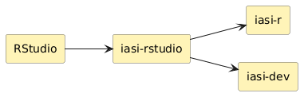
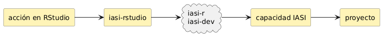

IASI RStudio: IASI dentro de RStudio
iasi-rstudio integra el ecosistema IASI en RStudio y acerca sus operaciones al flujo de trabajo habitual del desarrollador. Actúa como una capa interactiva de integración, proporcionando acciones, asistentes y puntos de entrada propios de RStudio sin duplicar la lógica de ingeniería de los componentes IASI.
Overview
iasi-rstudio es el plugin de integración entre RStudio y IASI. Su responsabilidad es trasladar las capacidades de IASI al entorno interactivo de RStudio de forma coherente con sus proyectos, menús, comandos y herramientas de desarrollo.
La lógica de ingeniería permanece en los componentes especializados del ecosistema:
iasi-rproporciona las capacidades relacionadas con proyectos R y Quarto y con su ciclo de validación, construcción, publicación y release.iasi-devproporciona las capacidades de nivel superior relacionadas con proyectos, organización, materialización, workflows y operaciones de desarrollo.
iasi-rstudio se apoya en ambos y presenta esas capacidades dentro de RStudio como una experiencia integrada.
Modelo

La separación es deliberada: iasi-rstudio conoce cómo presentar e integrar una capacidad en RStudio; iasi-r e iasi-dev conocen cómo ejecutarla dentro del modelo de ingeniería IASI.
Capacidades
Crear proyectos Quarto
Inicializa proyectos Quarto siguiendo las convenciones, estructura y configuración definidas por IASI.
Crear proyectos R
Crea proyectos R preparados para trabajar dentro del modelo IASI, incluyendo su estructura inicial y los elementos de configuración correspondientes.
Generar EDR
Facilita la creación de fichas EDR a partir de plantillas y convenciones IASI, integrándolas directamente en el proyecto activo.
Ejecutar el ciclo IASI
Expone desde RStudio operaciones como validación, build, publicación y release, delegando su ejecución en iasi-r.
Operar sobre proyectos
Permite acceder a operaciones de proyecto, materialización y workflows proporcionadas por iasi-dev sin abandonar RStudio.
Crear artefactos IASI
Ofrece asistentes para incorporar al proyecto configuraciones, documentación, estructuras y otros artefactos definidos por el ecosistema IASI.
Estas capacidades pueden materializarse mediante addins, comandos, asistentes, acciones contextuales u otros mecanismos propios de RStudio. La interfaz concreta puede evolucionar sin alterar la separación de responsabilidades entre el plugin y los componentes que ejecutan la lógica.
Integración
iasi-rstudio funciona como un frontend especializado para RStudio. No introduce un segundo modelo de proyecto ni una implementación paralela de los procesos IASI.
Cuando una acción pertenece al dominio R o Quarto, el plugin utiliza iasi-r. Cuando pertenece al dominio de organización, proyecto u orquestación del entorno de desarrollo, utiliza iasi-dev.

El resultado es una integración en la que RStudio aporta la experiencia interactiva y IASI mantiene centralizada la semántica de ingeniería.
Recursos
User Guide
Uso del plugin, creación de proyectos, generación de EDR y acceso a las operaciones IASI desde RStudio.
Developer Guide
Principios de integración, responsabilidades del plugin y criterios para incorporar nuevas capacidades IASI a RStudio.
Technical Guide
Arquitectura de integración, comunicación con iasi-r e iasi-dev y mecanismos técnicos utilizados dentro de RStudio.
Repository
Código fuente, integración con RStudio, documentación y evolución pública de iasi-rstudio.